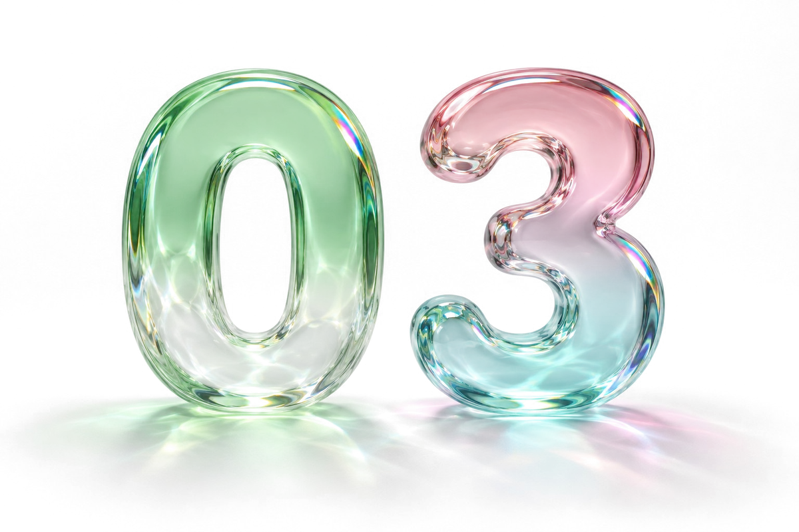
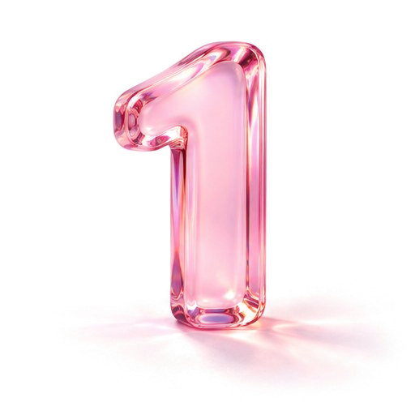
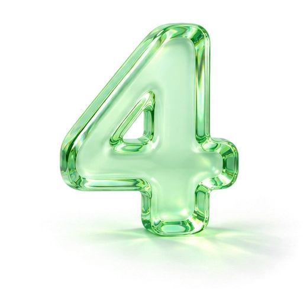

$480 billion is gone
the star50 is china's index of ai and chip leaders. it fell about 40% in less than four months.

edition 03, nov 5
in china, the ai bubble has already burst.
that's a real headline from the globe and mail, and it comes with a number: about $480 billion wiped off ai stocks in under four months. we'll fly through what fell, then i'll show you one skill that holds up whichever way this goes.
my latest essay: if you've never done the job, your agent is just adding to the slop

in china, the ai bubble has already burst.
"and now we see the bubble bursting."
"all bubbles inevitably burst."
guess first. how far did china's ai stock index fall in under four months?
this is a stock price story. nobody in it is claiming the ai stopped working.
swipe through the five cards, or tap next.
the star50 is china's index of ai and chip leaders. it fell about 40% in less than four months.
retail buyers piled into robot maker unitree's listing in august. by friday its shares had closed about 23% below where they started trading. chipmakers metax and moore threads have each lost about half their value since july.
that's what investors pay for every dollar these companies earn. for comparison, the us nasdaq 100 sits around 30.
goldman sachs counts ai stocks as 42% of the market's value and 57% of its trading, which is why the drop dragged everyone else down with it. the csi 300, china's main index of big companies, lost 8.5% in october, its worst month in more than a decade.
goldman still counts dozens of chinese ai stocks as promising, and bnp paribas sees openings for careful buyers. the us is shakier than it was a week ago. the nasdaq fell 2.9% on friday after weak results from intel and amazon and closed 7.8% below its record.
sources: the globe and mail, via finwire, oct 26, the daily upside, nov 2, reuters, oct 31 and reuters, oct 30
so is the us next?
salesforce calls ai agents "digital workers."
enrique dans teaches at ie business school, and he wrote in fast company that the label is a mistake.
"it's a bad idea to build the org chart in silicon."
his argument is that an agent should be a part you can swap out, and whatever the company learns along the way should stay with the company when you do.
source: fast company, oct 24
say you switch to a better ai tomorrow. tap the two things you'd keep.

a bubble means people paid more for these companies than they were worth. the tools i use every day didn't get worse because a chip stock in shanghai lost half its value.
if one of these companies disappears, the instructions you wrote for your ai still work somewhere else.
simi
most people type a few words into ai, like "china ai bubble?", and get a textbook answer back. if you add who you are and what you want to know, the answer is about your life. try it with this week's news.
pick a headline, or paste any headline you saw today.
tell it who you are, in a few words.
ask what you actually want to know.
here's what you'll send. it updates as you type.
the button opens a new chat with your message already typed in. press send and read what comes back. next time you see a headline that worries you, ask the same way: the story, who you are, and what you want to know.